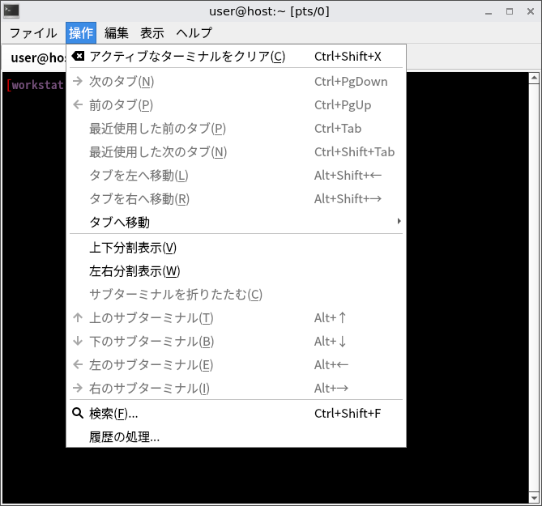
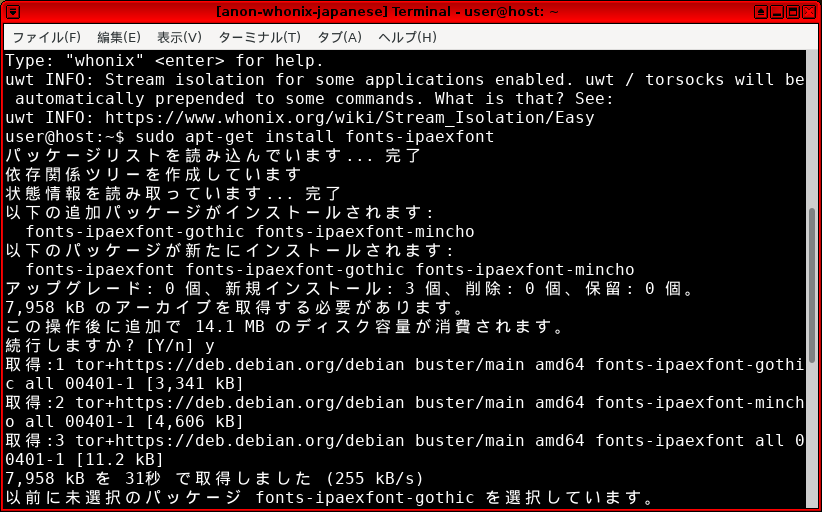
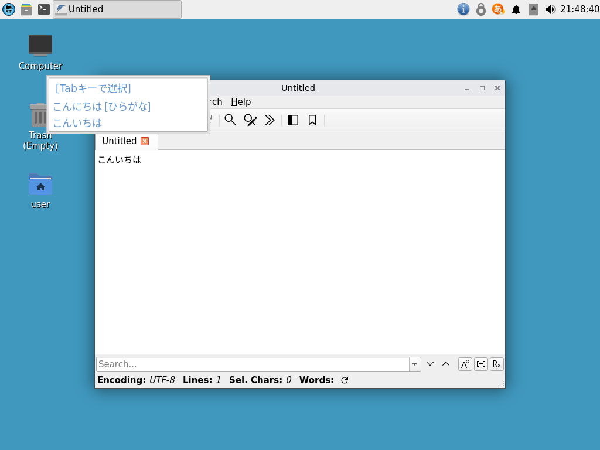
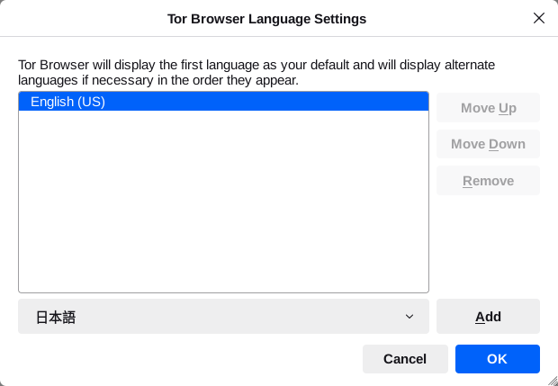
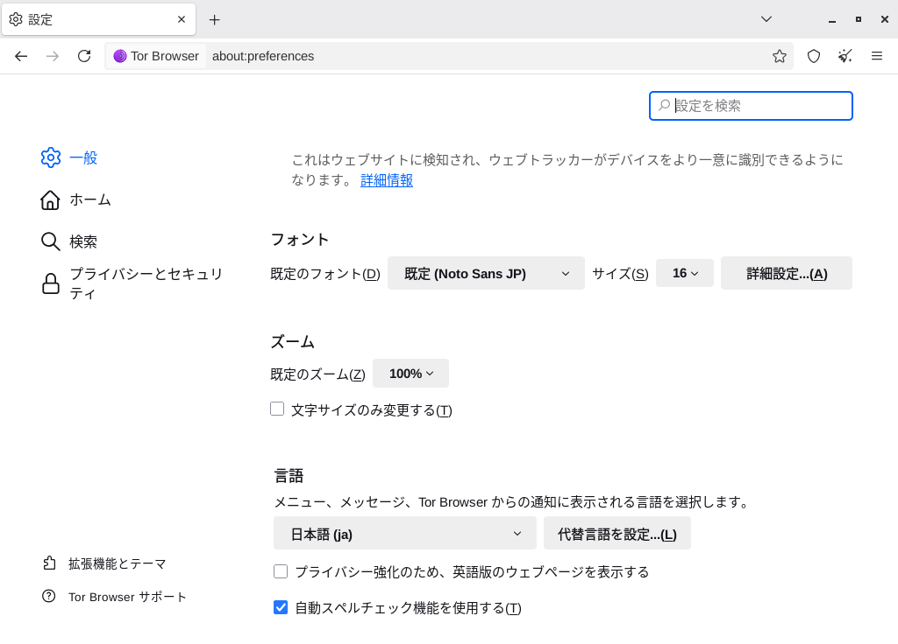

We believe security software like Whonix needs to remain Open Source and independent. Would you help sustain and grow the project? Learn more about our 14 year success story and maybe DONATE!
UninstallDocumentationCommon CLI CommandsPrevious page: UninstallIndex page: DocumentationNext page: Common CLI CommandsChange the System or Tor Browser Language

How to change the User Interface Language for your Operating System and Tor Browser.
Introduction
The system language used in Whonix is easily changed. The technical steps are identical to the Debian method because Whonix is based on Debian GNU/Linux and LXQt. Users can also refer to Debian or LXQt upstream documentation. It is also easy to change the language in Tor Browser (see further below). Native English speakers do not need to make any changes.
System
These instructions are sourced from the Debian wiki ChangeLanguage and InputMethodBuster entries.
All Languages
1. Open a terminal in Whonix-Workstation™ (Qubes-Whonix™: in Template).
Open a terminal.
Select your platform.
Non-Qubes-Whonix USER Session
If you are using a graphical Whonix with LXQt, complete the following steps.
Start menu → System Tools →
QTerminal
Non-Qubes-Whonix SYSMAINT Session
In the System Maintenance Panel, under the
Misc section,
click Open Terminal.Qubes-Whonix
If you are using Qubes-Whonix, complete the following steps.
Qubes App Launcher (blue/grey "Q") →
Whonix-Workstation™ App Qube (commonly named anon-whonix)
→ QTerminal
2. Check the language environment variable.
Run. [1]
env | grep LANG
The output should show.
LANG=en_US.UTF-83. Determine the code for your language and country.
Before re-configuring the locale to your local language it is necessary to identify the two letter code for your language and country:
- Language: the two-letter ISO 639-1 language code is found in
the fourth column (639-1) here.
For example, Japanese is
ja, Korean isko, German isdeand so on. - Country: this
website ("Country Codes") identifies country codes. For example,
Japan is
JP, Korea isKR, Germany isDEand so on.
It is now possible to combine these codes to determine the language
to export. For example, Japanese is ja_JP.UTF-8, Korean is
ko_KR.UTF-8, German is de_DE.UTF-8 and so
on.
4. Reconfigure locales.
Reconfigure locales with the following command. [2]
sudo dpkg-reconfigure locales
A window will prompt for the preferred locale(s) to be made available. Select the preferred option(s) with the space bar -- multiple locales can be chosen.
5. Reboot Whonix-Workstation.
This is required for the changes to take effect.
Figure: Japanese Locale in Whonix

Fonts
Depending on the locale, it may be necessary to install additional fonts in Whonix-Workstation so characters present correctly system-wide.
1. Platform specific notice.
- Whonix: No special notice.
- Qubes-Whonix: In Template.
2. Font installation.
- Debian stable fonts packages.
- TrueType (TTF) and OpenType (OTF) fonts are generally recommended.
These packages start with
fonts-. - For Korean fonts, an anonymous forums contributor previously
recommended the following additional packages:
fonts-unfonts-core(Korean TrueType fonts) andnabi(Korean X input method). After restarting Whonix-Workstation and starting nabi, the Korean script should be available system-wide for writing and reading. [3]
For example to install Japanese TrueType fonts:
Install package(s) fonts-noto-cjk following these
instructions:
1 Platform specific notice.
- Non-Qubes-Whonix: No special notice.
- Qubes-Whonix: In Template.
2
 Update the package lists and upgrade the system.
Update the package lists and upgrade the system.
sudo apt update && sudo apt full-upgrade
3
Install the fonts-noto-cjk package(s).
Using apt command line
 <code>--no-install-recommends</code> option is in most cases
optional.
<code>--no-install-recommends</code> option is in most cases
optional.
sudo apt install --no-install-recommends fonts-noto-cjk
4 Platform specific notice.
- Non-Qubes-Whonix: No special notice.
- Qubes-Whonix: Shut down Template and restart App Qubes based on it
as per
 Qubes Template Modification.
Qubes Template Modification.
5 Done.
The procedure of installing package(s) fonts-noto-cjk is
complete.
Figure: Japanese Font Installation in Whonix

Input Method
The ibus package is not recommended in Whonix 18. It can
interfere with both keyboard and mouse input in the default LXQt
session. It is also non-trivial to configure. Most keyboard layouts are
handled natively by labwc without issues.
Some languages (like Japanese) require an input method application to
write in the language's usual script. fcitx is known to
work. To set it up:
1. Open a terminal in Whonix-Workstation™.
Open a terminal.
Select your platform.
Non-Qubes-Whonix USER Session
If you are using a graphical Whonix with LXQt, complete the following steps.
Start menu → System Tools →
QTerminal
Non-Qubes-Whonix SYSMAINT Session
In the System Maintenance Panel, under the
Misc section,
click Open Terminal.Qubes-Whonix
If you are using Qubes-Whonix, complete the following steps.
Qubes App Launcher (blue/grey "Q") →
Whonix-Workstation™ App Qube (commonly named anon-whonix)
→ QTerminal
2. Install fcitx.
sudo apt install fcitx
3. Install an input method engine for your language.
For Japanese, fcitx-mozc is known to work.
sudo apt install fcitx-mozc
4. Configure fcitx to autostart on login.
Run:
mkdir -p ~/.config/labwc nano ~/.config/labwc/autostart
Type in the following line at the end of the file:
fcitx
Save with Ctrl + S, then exit with
Ctrl + X.
5. Configure applications to use fcitx as an input method.
Run:
nano ~/.config/labwc/environment
Type in the following lines at the end of the file:
XMODIFIERS=@im=fcitx GTK_IM_MODULE=fcitx QT_IM_MODULE=fcitx
6. Log out and log back in. You should see a
keyboard icon in the system tray; this indicates that fcitx
is running.
7. Right-click the fcitx icon in the
system tray, and click Configure.
8. Click the + button in the lower-left
corner of the window.
9. Uncheck
Only Show Current Language.
10. Search for the input method you installed (note
that this is NOT the same as the name of the language you want to write
text in!). For instance, if you installed fcitx-mozc,
search for mozc here.
11. Click the input method, then click
OK.
12. Close the fcitx configuration
window.
13. To switch between input methods, press
Ctrl + Space. The newly chosen input method will be
displayed on screen. Note that fcitx tracks input methods on a
per-window basis. For example, if you have two Firefox windows open, and
you switch to Japanese input via Mozc in one window, the other window
will still be using an English (or other) input method.
14. Done.
Input method configuration is now complete.
Figure: Japanese Input in Whonix

Tor Browser
Using one of the methods below is sufficient to change the language in Tor Browser.
about:preferences Method
- Type
about:preferencesin the URL bar. - Scroll down to the languages section and search for the preferred
language:
Language→Set Alternatives... - Add the preferred language.
- Restart Tor Browser.
Figure: Tor Browser Language Selection

Figure: Japanese Tor Browser in Whonix

Debian Firefox Language Pack Method
 Untested. Please test and leave feedback.
Untested. Please test and leave feedback.
Complete these steps in Whonix-Workstation.
1. Update the package lists.
sudo apt update
2. Search for available language packs.
apt-cache search firefox-esr-l10n-
3. Install a language pack.
In the example below, replace -de with the preferred language.
sudo apt install firefox-esr-l10n-de
4. Change the necessary Tor Browser setting. [4]
sudo find /usr/lib/firefox-esr/browser/extensions -maxdepth 1 -name 'langpack*.xpi' -exec ln -s '{}' /home/user/.tb/tor-browser/Data/profile/extensions/ ';'
See Also
Footnotes
- The Debian wiki notes:
First, you have to set EnvironmentVariables such as LANG, LANGUAGE, LC_CTYPE, LC_MESSAGES to your local language. Usually LANG (or LC_ALL) is sufficient.
- Do not omit the
LC_ALL=Ccomponent of the following command, asdpkg-reconfiguremay crash without it in some instances. Install package(s)
fonts-unfonts-core nabifollowing these instructions: 1 Platform specific notice. * Non-Qubes-Whonix: No special notice. * Qubes-Whonix: In Template. 2
Update the package lists and upgrade the system.
sudo
apt update && sudo apt full-upgrade
3
Install the fonts-unfonts-core nabipackage(s). Usingaptcommand line
<code>--no-install-recommends</code> option is in most cases
optional.
sudo
apt install --no-install-recommends fonts-unfonts-core nabi
4
Platform specific notice. * Non-Qubes-Whonix: No special notice. *
Qubes-Whonix: Shut down Template and restart App Qubes based on it as
per
Qubes Template Modification.
5
Done. The procedure of installing package(s)
fonts-unfonts-core nabiis complete.- https://bugs.debian.org/cgi-bin/bugreport.cgi?bug=864401
Categories: Documentation